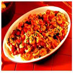
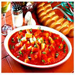
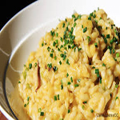

Compre uma comida Árabe e leve o refrigerante de graça.
Comidas Italianas
Spaghetti

Apesar de sua origem não ser conhecida com certeza (pode ser árabe, chinesa ou italiana), o espaguete também obteve “fama” internacional através dos italianos, inclusive o nome é de origem italiana (uma tradução literal seria: cordinha)
Gnocchi

Um dos mais conhecidos tipos de massa, o Gnocchi (ou nhoque/inhoque aqui no Brasil) foi criado há muitos séculos atrás. Foi bastante difundido pela Europa graças ao império romano, que o levava a diferentes lugares. Originalmente era feito de semolina, mas o tipo mais popular hoje em dia é feito de batata.
Risoto

É um prato típico do norte da Itália. A receita original surgiu em um casamento, onde um aprendiz quis fazer uma brincadeira com seu mestre (sua filha que estava casando), e subornou o chef para colocar açafrão no risoto.